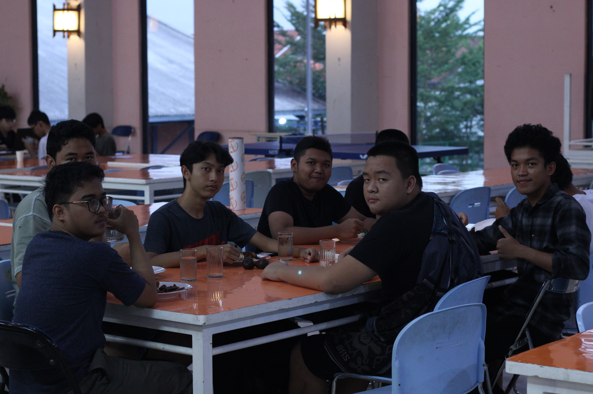
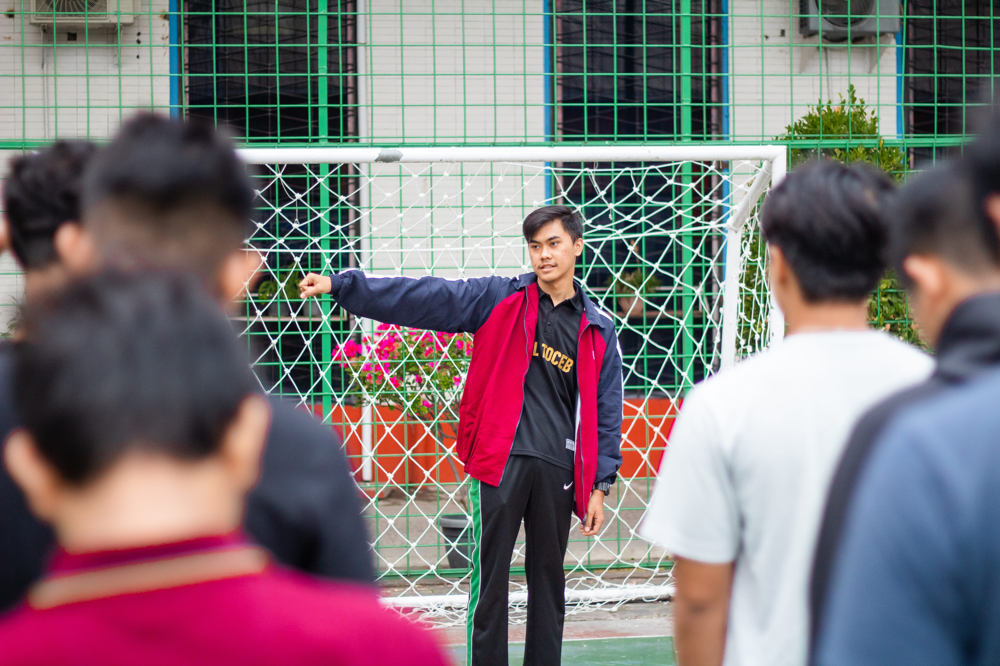
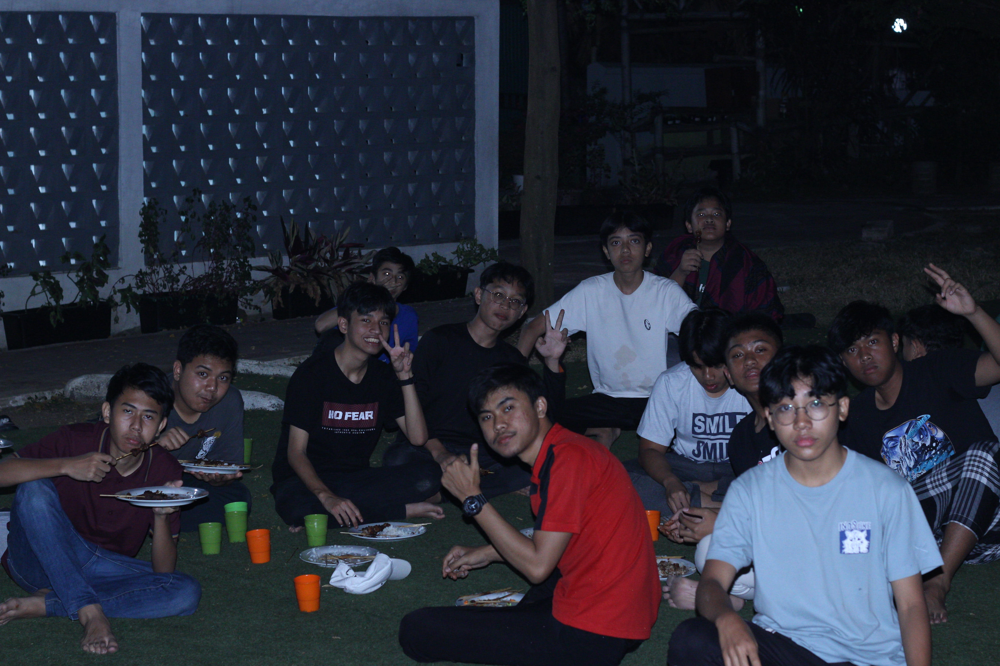

Kegiatan Tahunan
Welcoming Party
Welcoming Party merupakan salah satu kegiatan yang sangat dinantikan oleh seluruh siswa asrama. Acara ini adalah momen berharga di mana siswa baru disambut dengan hangat oleh siswa lama. Suasana penuh semangat dan antusiasme mengisi ruangan saat seluruh anggota asrama berkumpul untuk merayakan kedatangan siswa baru. Live musik menghiasi malam tersebut, menciptakan atmosfer yang ceria dan meriah. Tidak hanya itu, para siswa juga menampilkan berbagai performance menarik, mulai dari tarian, drama, hingga nyanyian, yang memperkaya pengalaman seluruh hadirin. Acara ini juga menjadi kesempatan yang sempurna untuk saling berkenalan dan menjalin persahabatan baru antara siswa lama dan siswa baru. Tidak lupa, makan-makan bersama menjadi bagian tak terpisahkan dari Welcoming Party ini, di mana hidangan lezat disajikan untuk memperkuat ikatan sosial antara anggota asrama. Keseluruhan suasana yang hangat, ramah, dan penuh keceriaan menjadikan Welcoming Party sebagai pengalaman yang tak terlupakan bagi seluruh anggota asrama.
Seluruh siswa asrama dengan antusias menyambut kehadiran Welcoming Party ini setiap tahunnya. Penyambutan yang dilakukan oleh siswa lama menciptakan rasa kekeluargaan yang erat di antara anggota asrama. Live musik yang dimainkan dengan semangat dan bakat para siswa menambahkan sentuhan kesenian yang luar biasa dalam acara ini. Performance yang ditampilkan oleh siswa juga menunjukkan keragaman bakat di dalam asrama, memberikan hiburan yang memikat bagi semua yang hadir. Selain itu, makanan yang disajikan menjadi waktu yang menyenangkan untuk berbicara, tertawa, dan berbagi cerita di meja makan. Welcoming Party adalah saat yang penuh keceriaan yang mengikat erat komunitas asrama, dan melalui acara ini, siswa baru merasa benar-benar diterima dan disambut dengan hangat dalam lingkungan asrama yang baru. Acara ini tidak hanya tentang menyambut siswa baru, tetapi juga tentang menciptakan kenangan berharga yang akan mereka bawa sepanjang perjalanan mereka di asrama.

Astra League
Astra League adalah sebuah kompetisi tahunan yang memadukan kegiatan olahraga dan esport, menciptakan suasana persaingan yang seru dan meriah di antara anggota kelompok dari berbagai jenjang sekolah, mulai dari SMP hingga SMA. Acara ini memberikan kesempatan unik bagi siswa untuk berpartisipasi dalam berbagai lomba, termasuk voli, basket, dan futsal, yang memungkinkan mereka untuk mengembangkan keterampilan olahraga mereka serta mempererat ikatan sosial antara kelompok yang berasal dari berbagai tingkatan sekolah.
Selain lomba olahraga konvensional, Astra League juga menyertakan lomba esport yang sangat populer seperti Mobile Legends dan Valorant. Lomba-lomba ini menarik minat para gamer di antara peserta, memungkinkan mereka untuk bersaing dalam dunia esport sambil tetap menjalin persahabatan dan kerja sama antara kelompok-kelompok yang beragam. Astra League bukan hanya tentang memenangkan trofi, tetapi juga tentang memupuk semangat sportifitas, kerjasama tim, dan pengembangan keterampilan dalam berbagai bidang, dari olahraga hingga esport, sehingga menciptakan pengalaman berharga bagi semua peserta.

Farewell Party
Farewell Party adalah salah satu acara yang dinantikan oleh seluruh siswa asrama. Acara ini diadakan untuk merayakan perpisahan dengan anggota asrama yang akan segera menyelesaikan masa tinggal mereka di sana. Suasana hangat dan penuh emosi memenuhi ruangan saat seluruh siswa asrama berkumpul untuk memberikan penghormatan kepada teman-teman yang akan pergi. Live musik mengisi malam tersebut, menciptakan atmosfer yang meriah dan penuh semangat. Para siswa juga menampilkan berbagai performance yang menghibur, mulai dari tarian, drama, hingga nyanyian, yang mengingatkan semua orang tentang kenangan indah yang telah mereka bagi bersama selama masa tinggal di asrama. Tidak hanya itu, makan-makan bersama menjadi momen berharga yang memperkuat ikatan sosial di antara semua anggota asrama, sementara pemberian penghargaan kepada mereka yang telah memberikan kontribusi luar biasa selama masa tinggal mereka menambah sentuhan istimewa dalam acara ini.
Farewell Party bukan hanya tentang perpisahan, tetapi juga tentang mengenang momen-momen bersama, merayakan pencapaian, dan menghargai kontribusi yang telah diberikan oleh anggota asrama yang akan pergi. Acara ini menciptakan kesempatan untuk mengucapkan selamat tinggal dengan penuh cinta dan rasa terima kasih, sambil memperkuat rasa persaudaraan yang telah terjalin di antara seluruh siswa asrama. Pemberian penghargaan merupakan wujud penghormatan atas usaha keras dan dedikasi mereka dalam membangun komunitas asrama yang kuat. Dengan demikian, Farewell Party menjadi momen berharga yang tidak hanya melibatkan perasaan nostalgia, tetapi juga meneguhkan semangat persatuan di antara anggota asrama.
